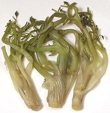

This plant, native to the Caucasus, was spread through Europe during the Roman Empire and today is used there mostly in France. The leaves have a more delicate flavor than parsley and with a hint of liquorice. Today it is commonly called for in gourmet magazines recipes to help you feel inadequate because you can't get it. To be fair, chervil is a standard component of the French fines herbs mix used in more delicately flavored dishes. I imagine it can be had at the Santa Monica Farmer's Market, but nothing will get me to drive to Santa Monica at dawn on Saturday to do battle with desperate chefs from all those fancy West Side restaurants.
On the other hand, chervil can often be found put up in 26 oz jars of brine at markets serving an Armenian community (see photo below). Photo by Rasbak distributed under GNU Free Documentation License.
More on Parsley Family.

Clearly the Armenians are willing to use brine pickled chervil because many of the markets serving that community have it in 26 oz jars. I know it's being bought because I've seen it sold out more than available. It would usually be used in an appetizer plate with herbs and other pickled vegetables.
Fresh chervil can be stored similarly to parsley. If a bit wilted cut off the stem bottoms and stand in water with a pinch of citric acid in it to refresh, wrap lightly and refrigerate. Pickled chervil can be refrigerated tightly sealed in a jar with its original brine for a couple months.
This plant is not only a different species from the leaf chervil, it is in a different genus, but always called chervil, so this is the page for it. It was popular from the time of the Roman Empire into the 19th century, Today chervil roots are used in the cuisines of France, mainly in soups and stews, and have been forgotten just about everywhere else.
Unlike the leaf chervil, this plant sends up a long pole-like stem with relatively sparse foliage and flower heads at the top. The roots are typically around 2-3/4 inches long and 1-1/4 inches wide at the top and have a light tan interior color. Properly aged (see Harvesting) they are said to taste similar to chestnuts, with a hint of carrot. Photo by Ouicoude distributed under license Creative Commons Attribution-ShareAlike v3.0 Unported.